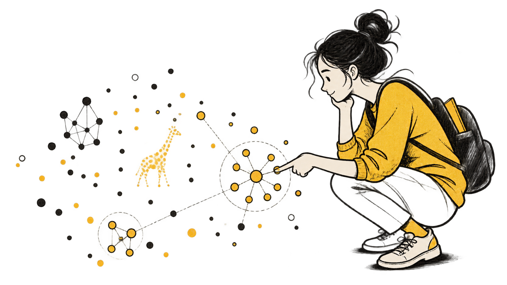

Лекция 1: kNN
Модель хранит саму выборку. Чтобы предсказать, каждый раз ищем ближайшие примеры – данные нужны при каждом запросе

Регрессия, классификация
Оптимизация, регуляризация
Модель хранит саму выборку. Чтобы предсказать, каждый раз ищем ближайшие примеры – данные нужны при каждом запросе
Для одного скалярного ответа модель хранит n+1 число: веса w и свободный член b. Выборка нужна только на обучении
kNN хранит примеры, линейная модель хранит веса. Вся сегодняшняя лекция – про то, как эти веса подобрать.
Пользователь отправил промпт. Предсказываем TTFT – время до первого токена, в миллисекундах
Регрессия
Тот же запрос и те же признаки. Предсказываем вероятность того, что TTFT≤450 мс
Классификация
В таблице признаков случайно оказались две почти одинаковые «длины промпта». Коэффициенты начинают плавать
Регуляризация
Это один сюжет на всю лекцию: сначала предсказываем «чиселку» 🙂, потом вероятность, потом чиним неустойчивые веса.
| Что берём | Конкретно | Оговорка |
|---|---|---|
| Признаки x | Длина промпта в токенах, загрузка кластера | Известны до запуска запроса |
| Ответ y | TTFT в миллисекундах | MLPerf Inference публикует агрегаты по конфигурациям, а не логи отдельных запросов |
Учебные точки на следующих графиках мы нарисовали сами. Граница доступности признаков – настоящая.
Наблюдения независимы и получены из одного распределения
y(1),…,y(m)∼i.i.d.p(y∣θ)
Вероятность получить зафиксированные данные D при выбранных параметрах θ
L(θ;D)=p(D∣θ)=∏i=1mp(y(i)∣θ)
Для D=(1,1,1,1,0): L(0,8)≈0,082, а L(0,3)≈0,006. Поэтому при этих данных p=0,8 правдоподобнее.
«Метод палки и верёвки»: устроен просто и работает замечательно.
Вспомним линейную алгебру.
У входного вектора n координат, у результата – k.
Для любых x,z и чисел α,β: можно сначала сложить и масштабировать векторы, а можно сначала применить T. Результат один.
T(x+z)=T(x)+T(z)
T(αx)=αT(x)
T(0)=0
Начало координат остаётся на месте
Проверьте себя: чему равно A(0), если A(x)=Wx+b?
Ответ: A(0)=b, и при b=0 ноль сдвинулся. Сдвинули ноль – отображение уже нелинейное. Поэтому модель со свободным членом математически аффинна.
Матрицей
В общем случае W∈Rk×n: строка j задаёт правило вычисления координаты [T(x)]j.
Аффинное отображение состоит из линейного преобразования и сдвига. Вот и обещанный ответ: A(0)=b.
Если k=1, выход одномерный и свободный член b – число. При k>1 сдвиг b является вектором.
На рисунке выход двумерный, поэтому b – вектор. Для скалярного score ниже свободный член b будет числом.
Добавили фиктивную единичку и получили скалярное произведение. Исходное отображение x↦wTx+b на Rn от этого линейным не стало.
Линейность появилась только в расширенном пространстве.
По сути, score – взвешенная сумма признаков плюс свободный член. Каждый признак добавляет wjxj.
Важно: сравнивать коэффициенты по модулю можно только при одинаковом масштабе и кодировке признаков.
При w=0 граница является аффинной гиперплоскостью. Вектор w смотрит по нормали.
Для каждого c получаем свою гиперплоскость. Они параллельны, потому что нормаль w одна и та же.
На границе score равен нулю. С одной стороны он отрицательный, с другой – положительный.
Для H={x:wTx+b=0} имеем wTx0=−b.
Почему делим на норму? Чтобы нормаль стала единичной, а проекция измерялась в единицах длины.
sc(x)=c(wTx+b), где c>0
sc(x)=0⟺s(x)=0
Граница та же. Класс тот же, score умножился на c
sˉ(x)=cwTx+b
Направление нормали то же
При b=0 расстояние ∣b∣/∥cw∥2 изменяется, граница сдвигается
Единичная нормаль требует делить на ∥w∥2 весь score: s(x)/∥w∥2. Число b – значение score при x=0, а не точка на границе.
y=wTx+b
График лежит в пространстве (x,y)∈Rn+1
wTx+b=0
Граница лежит в пространстве признаков x∈Rn
В регрессии гиперплоскость живёт в (x,y). В классификации граница живёт в пространстве признаков x.
«Предсказываем чиселку» 🙂
Параметры w,b подбираем по обучающей выборке.
Сама формула ещё не говорит, какие w,b выбрать. Для этого нужна функция потерь.
Признаки: x1 – длина промпта в токенах, x2 – загрузка кластера. Веса пока взяты руками; подбирать их будем дальше.
Прогноз 440 мс при пороге SLA 450 мс – предупреждать пользователя об ожидании не нужно. Эту строку мы пронесём через остатки, потери, градиентный шаг и классификацию.
x1 – токены, x2 – загрузка. Фиксируем нагрузку и проводим через точки прямую. Разброс данных никуда не исчезает.
Остаток сохраняет знак ошибки. Наш запрос: предсказали 440 мс, измерили 442 мс, значит r=+2 мс. На соседнем запросе вышло r=−2 мс.
Два запроса: на одном ошиблись на +2 мс, на другом на −2 мс. Средний остаток равен нулю, хотя модель промахнулась дважды.
Поэтому знак убирают. MSE сильнее увеличивает вклад большой ошибки, MAE слабее реагирует на выбросы. Пока это потери на одном объекте – усредним их на следующем слайде.
Q – средняя потеря на обучающей выборке. Это эмпирический риск.
Q оценивает истинный риск R по обучающей выборке. В формуле R пара (x,y) – новый случайный объект с ответом, а не строка обучающей матрицы X.
Строки X – объекты, столбцы – признаки. Последний столбец единиц учитывает b.
Размерности: X~ имеет размер m×(n+1), поэтому y^∈Rm.
Приравняли градиент к нулю, получили линейную систему и решили её.
Формула с обратной матрицей работает, если G=X~TX~ невырождена. Если нет, минимум может существовать, но параметры не обязаны быть единственными.
Три запроса, один признак: длина промпта в сотнях токенов. Последний столбец X~ – та самая фиктивная единичка со слайда про свободный член.
Проверьте себя: какие w1 и b дают нулевые остатки на всех трёх строках? Эту матрицу мы проведём через матрицу Грама, нормальные уравнения, ранг и вырожденный случай.
Матрица Грама собирает попарные скалярные произведения столбцов. Порядок столбцов тот же, что у w~=(w,b): сначала признаки, потом единица.
Диагональ – квадраты норм столбцов, вне диагонали – их взаимное направление. Здесь detG=42−36=6=0, значит коэффициенты восстановятся однозначно.
Столбцовое пространство – все векторы прогнозов X~w~, которые модель может получить на обучающей выборке. В минимуме невязка перпендикулярна этому пространству.
Проверка: y^=x1+1 даёт ровно (2,3,4), остатки нулевые. Система решена, ответ совпал с тем, что вы угадали.
Столбцы a1 и a2 лежат на осях u1,u2, а a3=a1+a2 – в той же плоскости. Независимых направлений два, а не три.
Вырожденное линейное отображение сжимает пространство в меньшую размерность. Обратной матрицы G−1 не существует.
Продублировали столбец с длиной промпта – и detG обнулился. Наборы (1,0,1), (0,1,1) и (21,21,1) дают один и тот же прогноз.
Вектор v лежит в ядре X~ и не меняет прогноз на обучающей выборке. Псевдообратная матрица выбирает среди решений одно – с минимальной нормой. К этому же примеру вернёмся в разделе про регуляризацию.
Матрицу явно не обращают: решают систему напрямую или используют QR/SVD. Для больших и потоковых задач переходят к итеративной оптимизации.
«Идём к оптимуму шаг за шагом»
Градиент – направление наискорейшего возрастания Q, антиградиент – наискорейшего убывания. Оба перпендикулярны линии уровня и, вообще говоря, не смотрят прямо в минимум.
η>0 задаёт размер шага. На итерации t сдвигаемся в направлении антиградиента.
Так обучают модели, для которых можно вычислить градиент функции потерь.
Одна переменная, шаг η=0,1. Минимум находится в точке w∗=2, но алгоритм этого не знает: он видит только производную в текущей точке.
Следующий шаг: Q′(0,4)=−3,2, поэтому w2=0,72. Шаги укорачиваются сами – чем ближе к минимуму, тем меньше производная. А при η=1,5 множитель 1−2η=−2, и точка улетает от минимума.
Минимизируем одну скалярную ошибку r, а не обучаем модель. У MSE модуль производной уменьшается возле нуля; у MAE модуль субградиента остаётся равным единице до излома. Точное попадание в ноль здесь зависит от η.
Один и тот же η оказывается слишком большим поперёк оврага и слишком маленьким вдоль него. Проверьте себя: вдоль какой координаты происходит «перелёт»?
H – матрица вторых производных Q. У квадратичной функции её собственные значения и есть кривизны вдоль главных направлений, а κ – их отношение. Слева κ=1, линии уровня круглые. Справа κ=18 – ровно тот овраг, который мы только что видели.
z1,z2 – те же параметры в новом масштабе. Предскажите, что будет при η=1,0 и при η=1,8, и только потом двигайте ползунок.
При слишком большом η отклонение растёт с каждым шагом: решение расходится.
Уложимся ли в SLA 450 мс?
Гиперплоскость делит пространство признаков на две области. Знак score задаёт класс: уложились в SLA или нет.
С одной стороны границы получаем класс 0, с другой класс 1.
«Линейным» классификатор называют из-за формы границы. При b=0 граница аффинна.
Небольшое изменение предсказания (score) около нуля перебрасывает объект в другой класс.
Подставляем в сигмоиду score s(x) и получаем число между 0 и 1.
Предсказываем не метку, а вероятность уложиться в SLA.
Речь об условной вероятности класса при заданном x, а не о вероятности уже случившегося события.
То же действие, что в начале лекции: данные зафиксированы, меняем параметры и смотрим, при каких наблюдение вероятнее.
Запрос уложился в SLA. Модель A даёт p=0,9, модель B – p=0,1. Правдоподобия 0,9 и 0,1: первая модель объясняет наблюдение в девять раз лучше.
Максимизировать правдоподобие неудобно: произведение маленьких чисел. Берём логарифм и меняем знак – получаем то, что надо минимизировать.
Уверенная ошибка стоит дорого: при p→0 для верного класса потеря растёт неограниченно. Для распределения Бернулли log loss совпадает с бинарной кросс-энтропией (BCE).
Аффинный score, сигмоида сверху и log loss в качестве потери – это и есть логистическая регрессия. Наконец назвали модель по имени.
Модель другая, функция потерь другая, а шаг обучения ровно тот же, что был в регрессии. Одна процедура обучает обе задачи.
s(x)=wTx+b
Зависит от масштаба параметров
dist(x,H)
=∥w∥2∣s(x)∣
Не зависит от ненулевого масштаба (w,b)
p(x)=σ(s(x))
Зависит от обученной шкалы score
99 запросов уложились в SLA
1 запрос не уложился
Accuracy =99%
Не нашла ни одного срыва SLA
Метрика выглядит отлично, а прикладная задача не решена. К тому же accuracy кусочно-постоянна: её производная почти везде равна нулю, градиентом её не оптимизируешь. Поэтому учим log loss, а accuracy и метрики редкого класса смотрим отдельно.
| Постановка | Что предсказываем | Чем учим |
|---|---|---|
| Регрессия | yreg=TTFT, мс | MSE или MAE |
| Классификация | ycls=1{TTFT≤450 мс} | Log loss |
| Общее | s(x)=wTx+b | Один и тот же шаг градиентного спуска |
Порог 450 мс – продуктовое решение, а не природная константа. Это две разные обученные модели: сигмоида от регрессионного прогноза не даёт вероятность события TTFT≤450 мс.
«Накладываем ограничения на решение»
В таблицу попали и «длина промпта в токенах», и «длина промпта в символах»
x2≈cx1: два столбца X несут почти один сигнал
w1x1+w2x2≈(w1+w2)x1
Данные хорошо определяют сумму w1+w2 и плохо различают сами коэффициенты
Это тот же дублированный столбец, из-за которого detG обнулился в аналитическом блоке. Только теперь столбцы совпадают не точно, а почти – и решение не исчезает, а становится неустойчивым.
w(A)=(1,0)
y^A=x1+1
w(B)=(0,1)
y^B=x2+1
w(C)=(21,21)
y^C=21(x1+x2)+1
При x2=x1 все три прогноза совпадают, а коэффициенты разные
У L2 производная 2w стремится к нулю вместе с коэффициентом: он плавно сжимается. У L1 в нуле излом и субдифференциал [−1,1], поэтому оптимум может оказаться ровно в нуле.
Ridge использует штраф L2. Множитель m появляется потому, что Q у нас усреднён по m объектам; последняя координата не штрафуется.
При λ>0 добавка mλD устраняет вырожденность, связанную с весами признаков. На последней диагонали стоит ноль: свободный член b обычно не штрафуют. В примере с продублированным столбцом штраф выбирает набор C – решение с наименьшей нормой весов.
Минимизируем только эмпирический риск Q
Коэффициенты могут быть неустойчивыми
Балансируем качество на выборке и размер коэффициентов
Чем больше λ, тем сильнее сжатие
λ выбирают по валидационным данным. Увеличение штрафа не обязано улучшать качество на новых объектах.
| Роль | Регрессия | Классификация |
|---|---|---|
| Обучение | MSE, MAE или другая функция потерь | Log loss (BCE) |
| Оценка | MSE, MAE | Accuracy и метрики редкого класса |
| Оговорка | Единицы и выбросы | Пример «99 из 100»: accuracy 99% при нуле найденных срывов SLA |
Функцией потерь обучаем модель – её можно дифференцировать. Метрикой проверяем, решает ли модель прикладную задачу.
Аффинный score. Вся геометрия – нормаль, линии уровня, полупространства – про него
Линейная регрессия. Учим MSE или MAE
Логистическая регрессия. Учим log loss
Один и тот же шаг градиента плюс штраф за большие веса
Выходы 1 и 2 – не два шага подряд, а две развилки от одного и того же score.
Ответы: 1) 0,8⋅500+40⋅1,5+120=580 мс, SLA не выполняется; 2) пропустить score через сигмоиду и учить log loss – это логистическая регрессия; 3) w1=0,4, а при η=1,5 множитель 1−2η=−2 и решение расходится; 4) G становится почти вырожденной, штраф выбирает одно решение и делает коэффициенты устойчивыми.
Сегодня x нам выдали готовым. Дальше представление объекта будем обучать вместе с весами
Для пары «слово – контекст» снова используем score, сигмоиду и log loss; обученные параметры становятся признаками слова
Откройте демо со слайда про расходимость, поставьте η чуть ниже 1/9 и предскажите форму траектории до запуска
Одна конструкция – score, функция потерь, шаг градиента – переносится дальше почти без изменений. Меняется только то, откуда берутся признаки.
Нотация векторов, матриц и индексов
Эмпирический и истинный риски
Нормальные уравнения и ортогональность невязки
Контекст метрики TTFT в сквозном примере